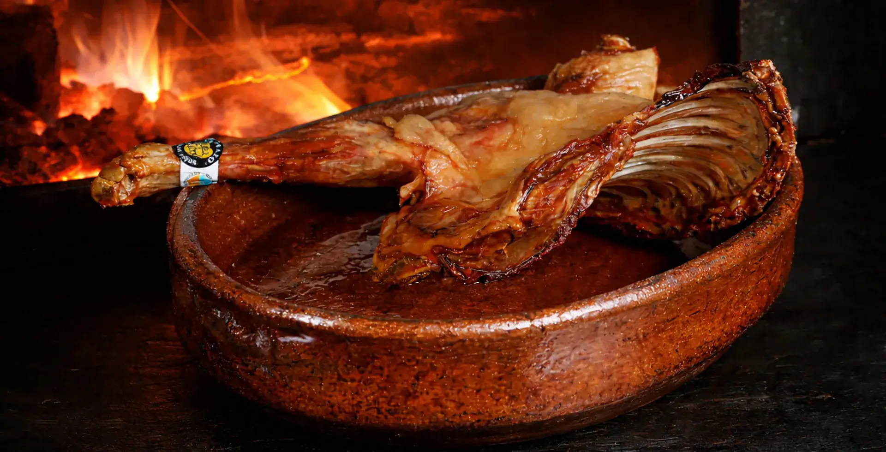

Cocinado lentamente en horno tradicional dentro de una fortaleza medieval entre piedra, brasas y fuego.
VER CARTAEl lechazo se cocina lentamente en horno de leña siguiendo una elaboración tradicional donde el tiempo, el fuego y la piedra forman parte de la experiencia.
Una cocina pensada para compartir sin prisa dentro de la Fortaleza Medieval La Manyosa.

Piedra, vino, brasas y cocina lenta dentro de un entorno pensado para disfrutar la gastronomía con calma.
Especialidades al fuego, horno de leña y cocina tradicional dentro de una fortaleza medieval.
VER CARTA